Установка и настройка операционной системы на виртуальную машину
2 марта 2026 г.
Целью данной работы является приобретение практических навыков установки операционной системы на виртуальную машину, настройки минимально необходимых для дальнейшей работы сервисов.
Перед началом работы были скачаны необходимые файлы с официальных сайтов. С сайта virtualbox.org был загружен установщик VirtualBox для Windows версии 7.2.6, а также Extension Pack для обеспечения дополнительной функциональности (поддержка USB 2.0/3.0, общий буфер обмена). С сайта fedoraproject.org был загружен образ операционной системы Fedora Sway Live x86_64 версии 43.
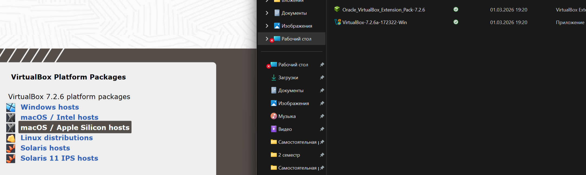
Рисунок 1 – Страница загрузки VirtualBox с доступными пакетами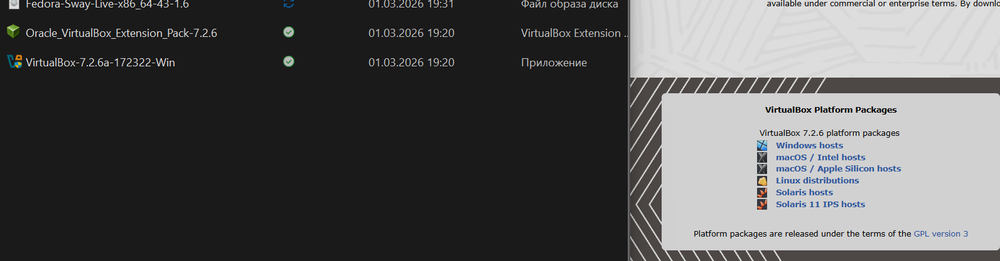
Рисунок 2 – Файлы VirtualBox, Extension Pack и образа FedoraПосле установки VirtualBox была выполнена его начальная настройка. В
соответствии с требованиями лабораторной работы была изменена папка для
хранения виртуальных машин по умолчанию на
D:\VirtualBox_Lab\, а также настроена хост-комбинация для
удобства работы.
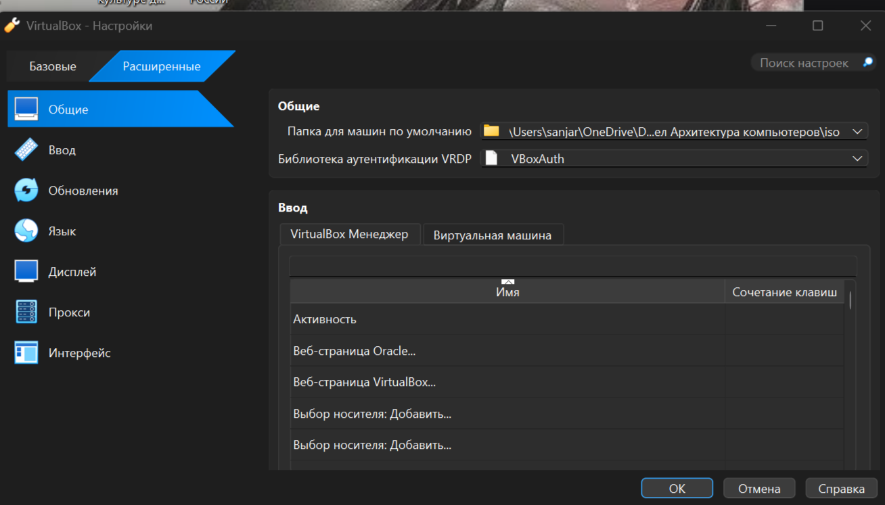
Рисунок 3 – Окно настроек VirtualBox с указанием папки для машинБыла создана новая виртуальная машина с именем
sniyazov1, соответствующем логину студента. Тип
операционной системы указан как Linux, версия – Fedora (64-bit). На этом
этапе образ ISO не подключался, чтобы избежать автоматической
установки.
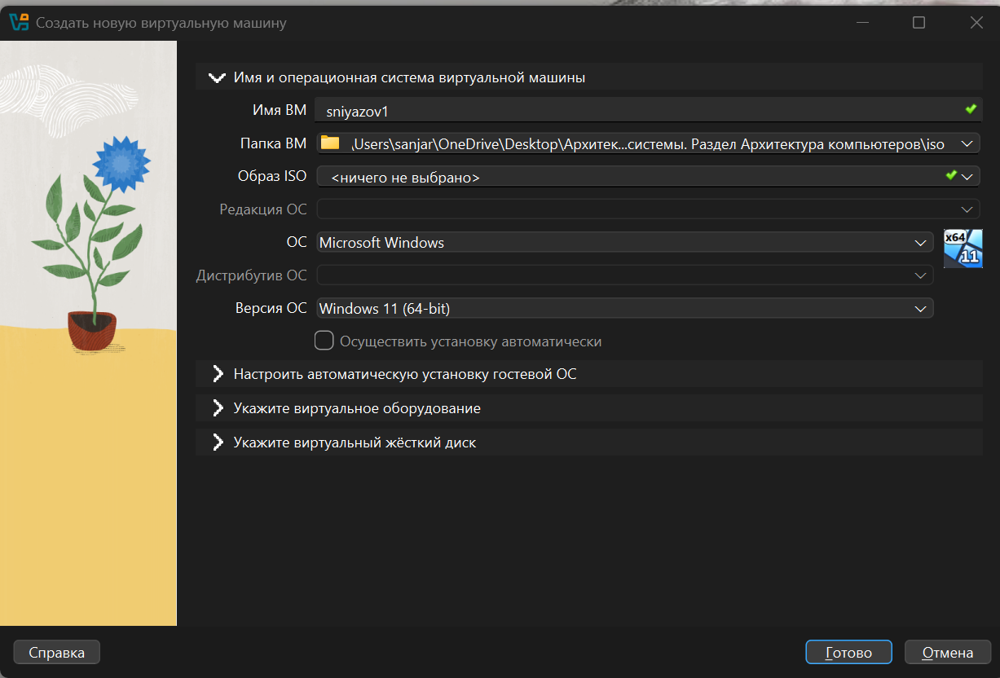
Рисунок 4 – Создание новой виртуальной машины с именем sniyazov1Для корректной работы гостевой ОС были настроены следующие параметры оборудования: - Оперативная память: 2048 МБ (рекомендованный минимум для Fedora). - Процессор: 2 ядра (для обеспечения достаточной производительности). - Включена поддержка EFI: в соответствии с требованиями лабораторной работы.
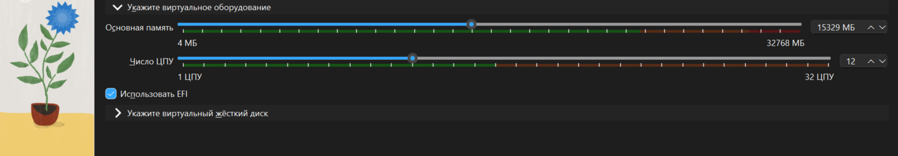
Рисунок 5 – Настройка оперативной памяти, процессора и включение EFIБыл создан новый виртуальный жесткий диск со следующими параметрами: - Тип: VDI (VirtualBox Disk Image). - Формат: динамический (занимает место на хосте по мере заполнения). - Размер: 80 ГБ (как указано в задании).
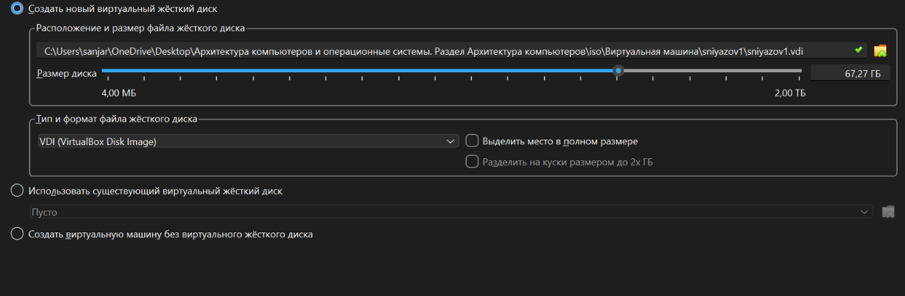
Рисунок 6 – Создание виртуального диска размером 80 ГБВ мастере создания ВМ была доступна опция автоматической установки.
На этом этапе были оставлены временные данные (vboxuser),
так как имя пользователя будет задано непосредственно в установщике
Fedora.
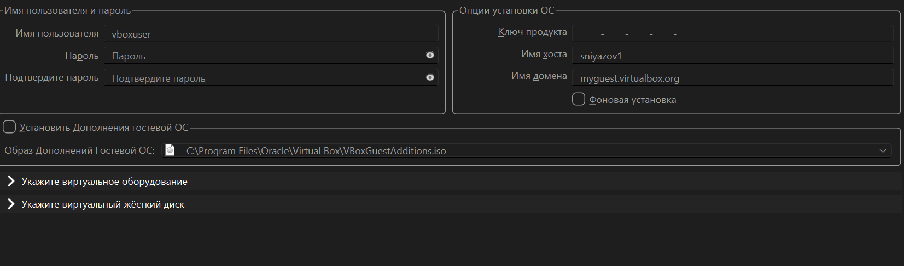
Рисунок 7 – Окно настройки автоматической установки гостевой ОСПосле завершения создания машины в настройках был подключен скачанный
ISO-образ Fedora, и машина была запущена. Процесс загрузки LiveCD
сопровождался выводом диагностических сообщений, включая предупреждения
графического драйвера (umuxfx), что является известной
особенностью работы Sway в VirtualBox.
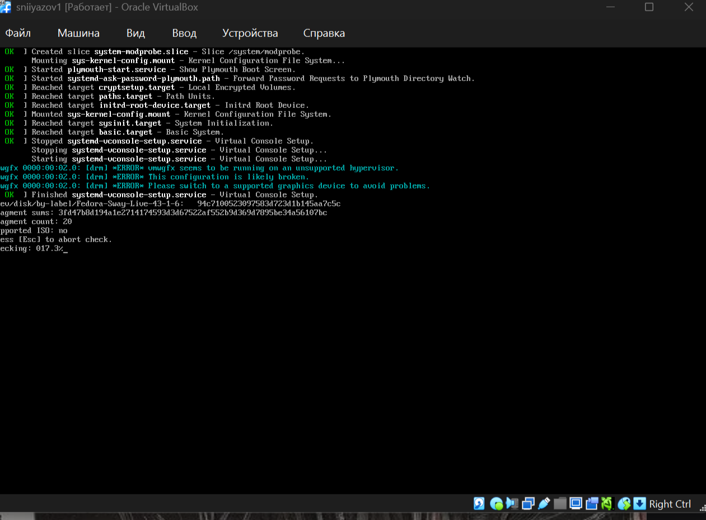
Рисунок 8 – Загрузка LiveCD с диагностическими сообщениямиВ загрузочном меню был выбран пункт
Start Fedora-Sway-Live 43 для запуска Live-режима.
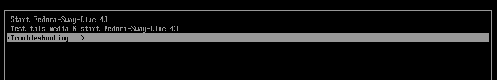
Рисунок 9 – Меню выбора режима загрузки LiveCDПосле загрузки графического окружения Sway была нажата комбинация
Win+D для открытия меню приложений, а затем
Win+Enter для запуска терминала, как указано в инструкции
на рабочем столе. В терминале была выполнена команда
liveinst для запуска графического установщика Anaconda.
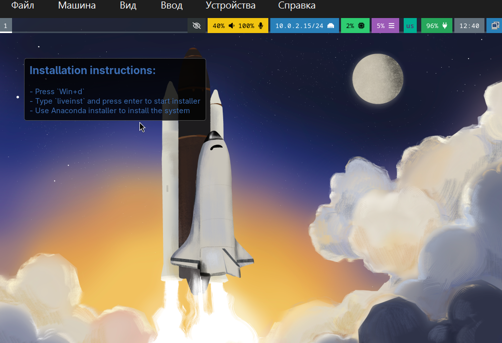
Рисунок 10 – Инструкция для запуска установщикаУстановка Fedora была выполнена с помощью программы Anaconda.
Ключевые этапы установки: 1. Выбор языка интерфейса (русский). 2.
Настройка диска: выбран пункт «Использовать весь диск»,
так как виртуальный диск чистый. 3. Настройка
пользователя: создан пользователь sniyazov01,
которому были предоставлены права администратора (группа
wheel). Пароль для root не задавался, вход
через sudo. 4. Запуск процесса установки.
После завершения копирования файлов система предложила перезагрузиться.
Рисунок 11 – Выбор диска и типа установки
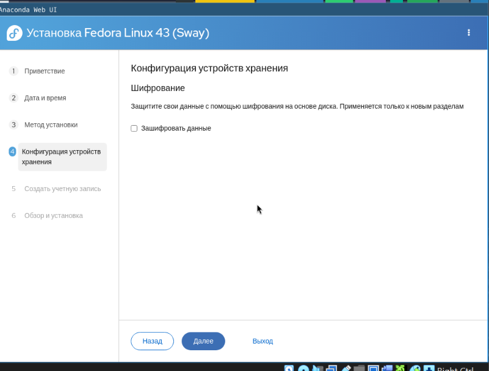
Рисунок 12 – Настройка хранилища (шифрование не использовалось)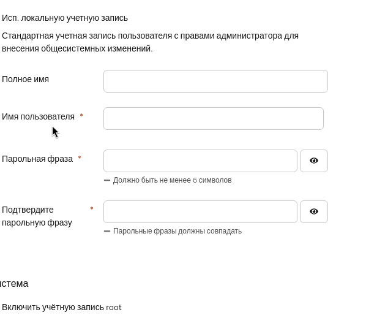
Рисунок 13 – Создание пользователя sniyazov01 с правами администратора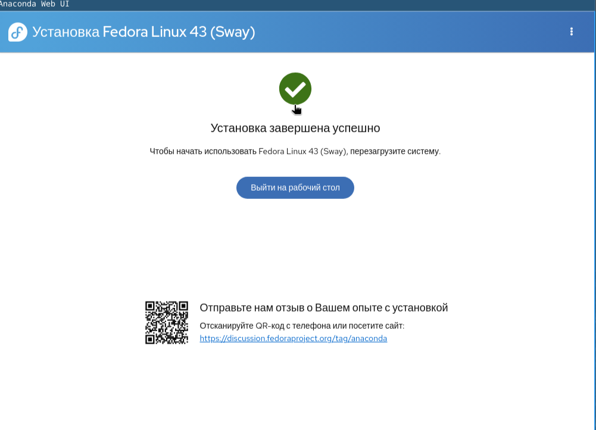
Рисунок 14 – Сообщение об успешном завершении установкиПосле перезагрузки и входа в систему под учетной записью
sniyazov01 была выполнена первичная настройка и установка
необходимого программного обеспечения. Для выполнения команд с правами
администратора использовалась утилита sudo.
```bash [sudo] пароль для sniyazov01: root@fedora:~# После этого установка всех компонентов прошла успешно.
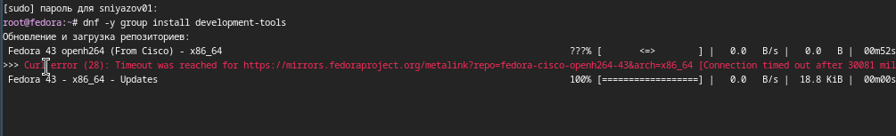
Рисунок 15 – Ошибка подключения к репозиторию Cisco OpenH264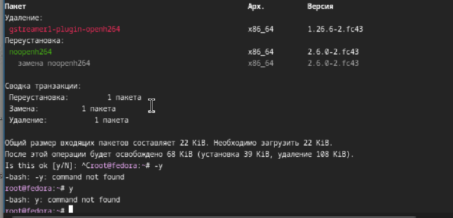
Рисунок 16 – Замена пакета openh264 на noopenh264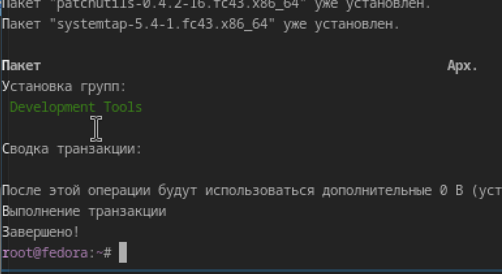
Рисунок 17 – Завершение установки группы пакетов Development ToolsДалее были выполнены команды для обновления всех пакетов системы и установки дополнительных полезных утилит.
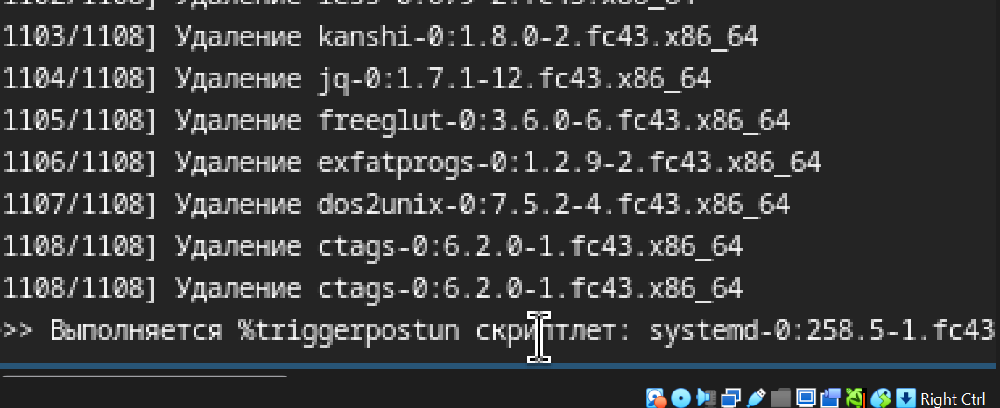
Рисунок 18 – Процесс обновления пакетов (dnf update)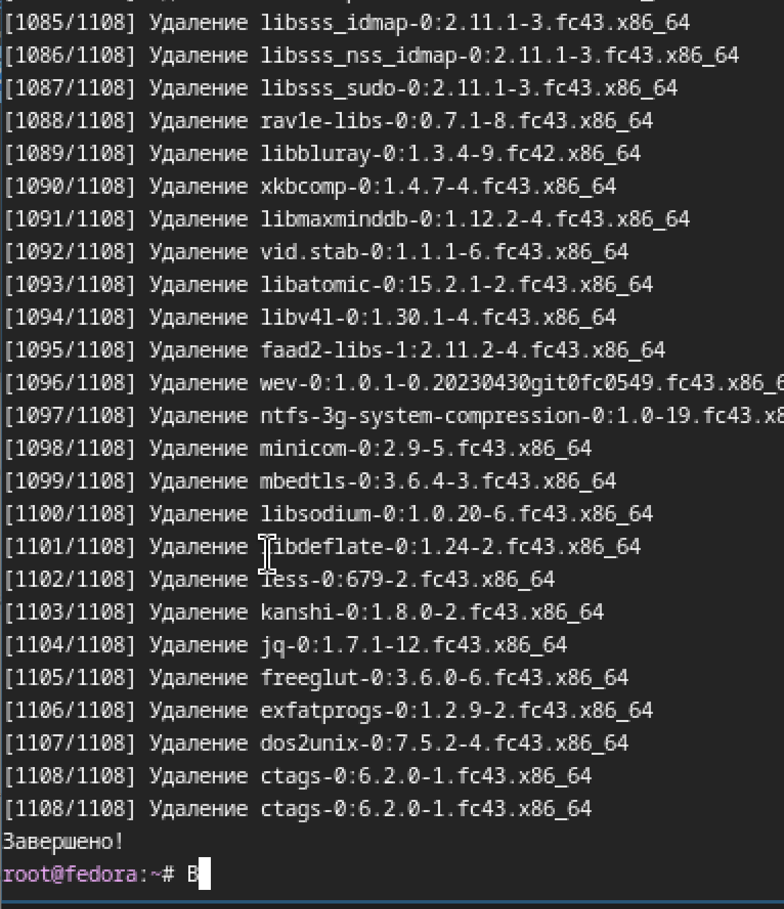
Рисунок 19 – Успешное завершение обновления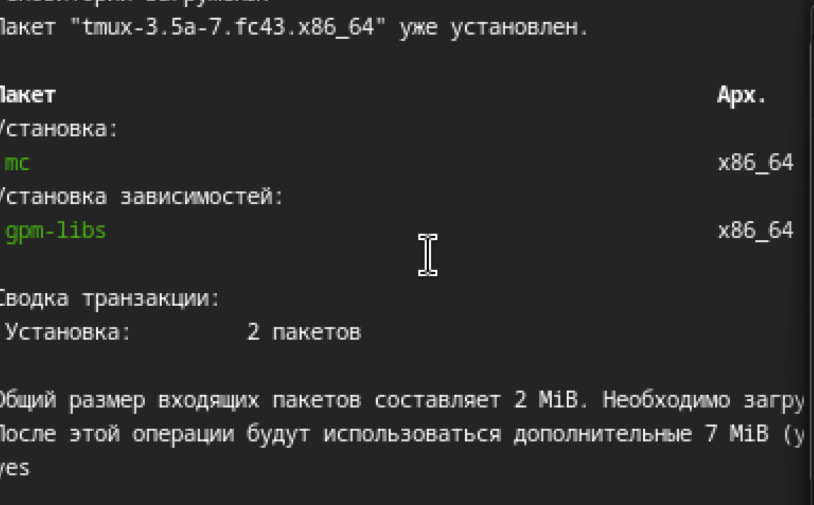
Рисунок 20 – Установка пакетов tmux и mc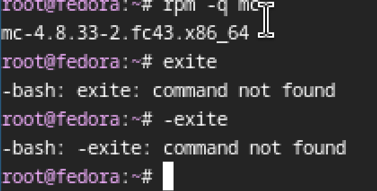
Рисунок 21 – Проверка версии установленного пакета mcВ рамках домашнего задания был проведен анализ последовательности
загрузки системы с помощью команды dmesg. Для доступа к
полному журналу ядра команда выполнялась с правами
суперпользователя.
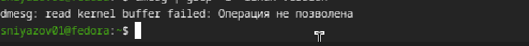
Рисунок 22 – Попытка выполнения dmesg без прав rootПосле переключения на пользователя root (команда
sudo -i) были получены следующие результаты. # 3.1. Версия
ядра Linux
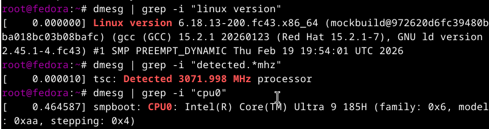
Рисунок 23 – Версия ядра LinuxС помощью команды dmesg | grep -i “detected.*mhz” была получена информация о тактовой частоте процессора.
Рисунок 24 – Частота процессора
Информация о модели процессора была получена командой dmesg | grep -i “cpu0”.
Рисунок 25 – Модель процессора
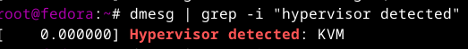
Рисунок 27 – Обнаруженный гипервизор # 3.6. Тип файловой системы корневого разделаИз вывода команды dmesg | grep -i “VFS” и последующих строк видно, что корневая файловая система — BTRFS.
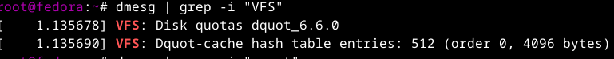
Рисунок 28 – Определение типа файловой системы корня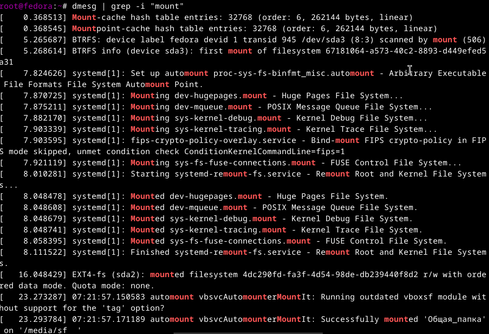
Рисунок 29 – Последовательность монтирования файловых системРепозиторий: https://github.com/Ghosts-23/study_2025-2026_os-intro [ 0.000000] Linux version 6.17.1-300.fc43.x86_64 (mockbuild@…) (gcc (GCC) 15.2.1 2025) #1 SMP …